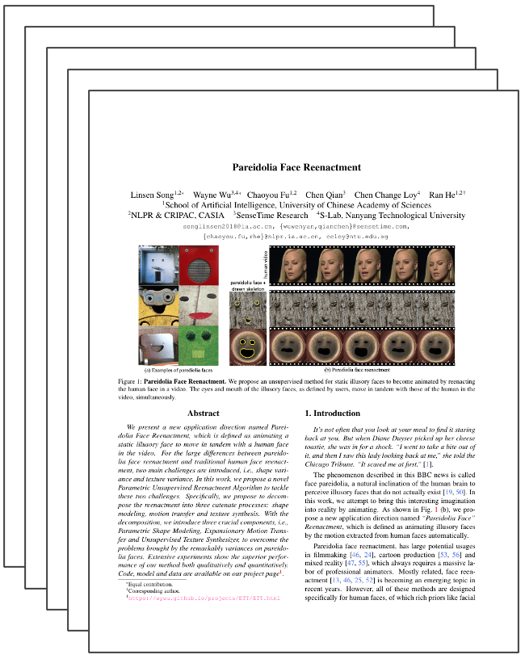

Everything’s Talkin’: Pareidolia Face Reenactment
|
NLPR & CRIPAC, CASIA
|
SenseTime Research
|
S-Lab, Nanyang Technological University
|
We present a new application direction named Pareidolia Face Reenactment, which is defined as animating a static illusory face to move in tandem with a human face in the video. For the large differences between pareidolia face reenactment and traditional human face reenactment, two main challenges are introduced, i.e., shape variance and texture variance. In this work, we propose a novel Parametric Unsupervised Reenactment Algorithm to tackle these two challenges. Specifically, we propose to decompose the reenactment into three catenate processes: shape modeling, motion transfer and texture synthesis. With the decomposition, we introduce three crucial components, i.e., Parametric Shape Modeling, Expansionary Motion Transfer and Unsupervised Texture Synthesizer, to overcome the problems brought by the remarkably variances on pareidolia faces. Extensive experiments show the superior performance of our method both qualitatively and quantitatively.
Paper
|  |
Everything’s Talkin’: Pareidolia Face Reenactment
Linsen Song*, Wayne Wu*, Chaoyou Fu, Chen Qian. Chen Change Loy, Ran He
Computer Vision and Pattern Recognition, CVPR 2021.
|
Video
{kind=link}